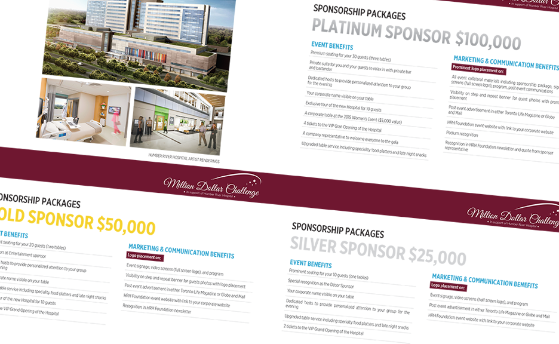

Client Tabletalk Catering
For the launch of Tabletalk Catering's new menu, I decided to create a minimal design which allowed for the stunning food to be the main focus.
Client Banff Centre for the Arts
No Coins
I was invited to curate a video game arcade installation during the Convergence International Summit on Art + Technology. The alternate title for No Coins was SlowCade, as the games chosen were contemplative and relaxing to play.
Clients Tim Hortons, Universal Eventspace, byPeterandPauls.com
Designing products requires one to think in 3D using a 2D medium. It's a multi-step process that begins with an initial design, then prototyping and then the final die line. I created these prototypes and die lines using existing branding.

Client Humber River Hospital Foundation

The Million Dollar Challenge
For Humber River Hospital Foundation's annual fundraising gala dinner I used rich, inspiring colours and elegant design elements in order to attract potential sponsors. In addition to creating the collateral leading up to the event, I also designed the Facebook graphics and created a responsive Wordpress website.

Client Universal Eventspace
New Construction Branding
Universal Eventspace, opening in August 2015, is a $32 million achievement in the event venue scene. This remarkable facility needed bold branding to reflect the immensity of the forthcoming structure.
Client Bellagio Boutique Event Venue
Illustrations and Typography
One way to make an event ad stand out is through custom illustrations and eye-catching typography - make your ad just as unique as your event.


The portrait illustrations below were created for fashion bloggers using Adobe Photoshop.
Client Stage Select Gaming Expo
Creative Direction
Stage Select Gaming Expo required complete brand identity creation and a branding guideline. The illustrated icons are used across all web and print promotions. Stage Select also has an esports division complete with its own brand identity.


Client byPeterandPauls.com

Social Media Graphics
The challenge with designing for social media is that each platform has its own image specifications. Sure, you can use the same image repeatedly, but making customized graphics for each platform looks professional and gives your followers some refreshing content to look at.


Hello!
Christine Kim is passionate about design, new media and video games. She is a self-taught designer and curator with an educational background in New Media Art History.
Born in Toronto, she moved to the suburbs spending her adolescence in Oakville and Burlington where she attended Robert Bateman Highschool. She spent some time in the Niagara region while pursuing her undergraduate degree in Studies in Arts and Culture at Brock University. She moved back to Toronto when she was accepted into the master's in new media art history program at the Ontario College of Art and Design.
Christine has spoken about her curatorial work and research on video games at The Art Gallery of Ontario, New York University, Canadian Games Studies Association, Society for Cinema and Media Studies, and other places. A founding member of the Vector Game + Art Convergence Festival, a multi-day conference funded by the Toronto Arts Council, Ontario Arts Council, and Canada Council for the Arts. She and Team Vector brought over 70 video game artists, researchers and academics to Toronto for five days of events that included 2 nights of performances and screenings, panel talks and 3 concurrent exhibitions.
As art director and co-founder of Stage Select Gaming Expo, Christine has brought together her designing skills and her knowledge of gaming culture in a very big way. Stage Select brings game developers, academics, fans and enthusiasts together annually to celebrate all things play!
Christine's favourite games are the Borderlands series, Animal Crossing New Leaf and The Sims.
Download my CV